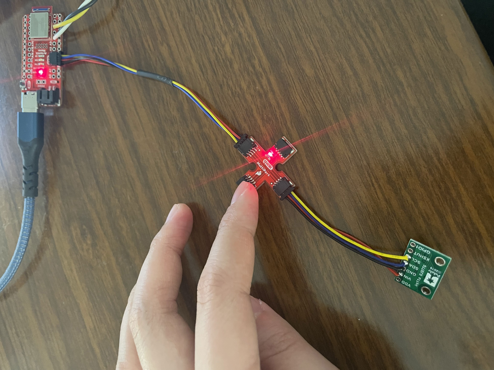
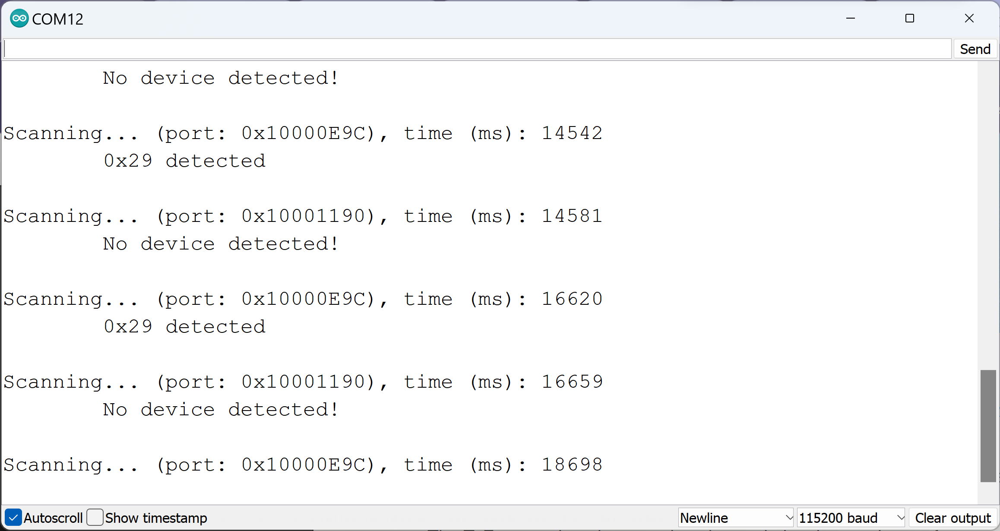
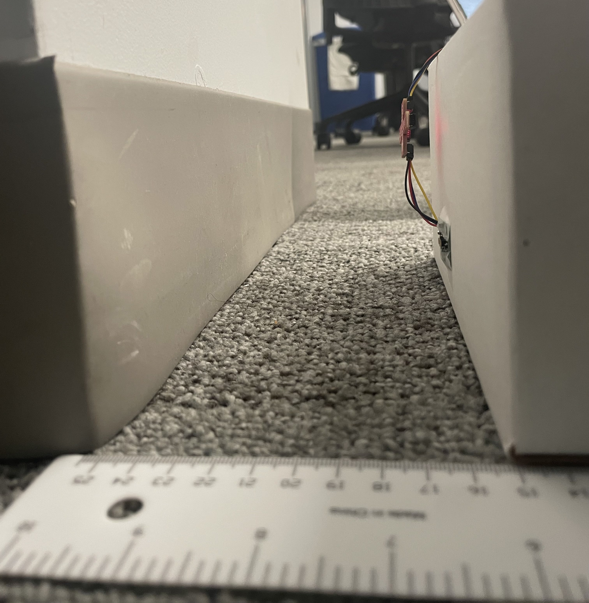
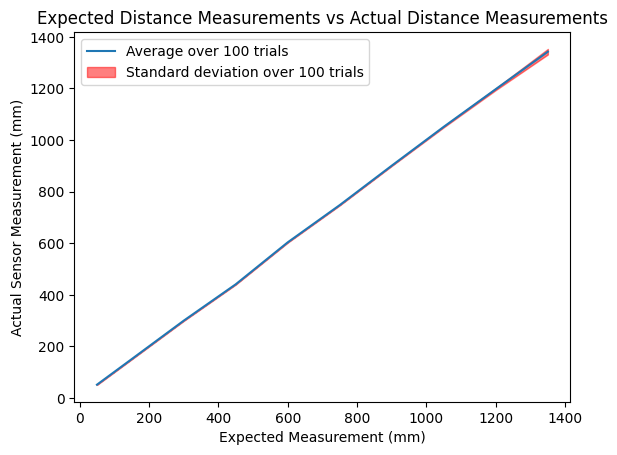
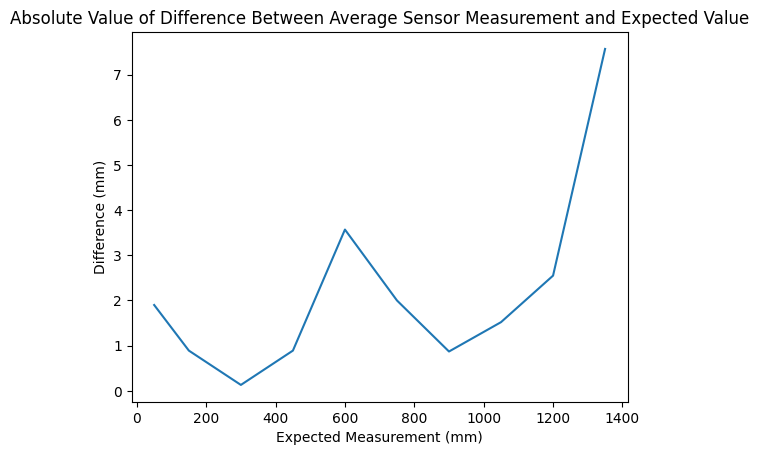
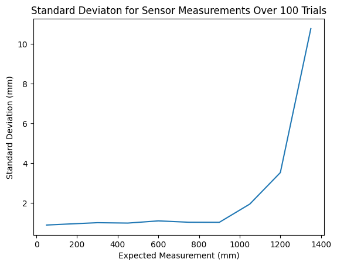

Objective
In lab 4, I learned how to get pitch, roll, and yaw from the IMU (Inertial Measurement Unit) sensors and transmitted the data over bluetooth from the Artemis. I also used batteries to power the Artemis so it could collect data while the car was running.
Set Up the IMU

I started off by running the IMU example code to ensure that the sensor worked. The following video demonstrates the sensor behavior as I rotate, flip, and accelerate the board.
As one can see, movements in the x, y, and z directions
In the code, the AD0_VAL is set to //. This is because //.
The First ToF Sensor
The following image shows one ToF sensor attached to the QWIIC breakout board.
Note that I later added a wire connecting the shutdown pin of the sensor to pin 7 on the Artemis.
To determine which wires corresponded with SDA and SCL, I referenced the following diagram from the QWIIC documentation:

The I2C address found by the Artemis is as follows:
This was the expected 0x52 value right-shifted by 1, so this is reasonable, as the last bit is the read/write bit.
The three modes were as follows:
.setDistanceModeShort(); //1.3m .setDistanceModeMedium(); //3m .setDistanceModeLong(); //4m, Default
These functions will optimize the sensor for different ranges by improving the accuracy. The comments for each of the different modes shows the distances that it is most useful for (1.3m, 3m, 4m). In this lab, I used the .setDistanceModeShort mode.
I then ran the Example1_ReadDistance example and conducted a series of tests. The test setup is shown below:
I moved the sensor by 15cm between 5cm and 135cm (1.35m, just out of the range of the short distance mode range) and collected 100 samples at each point. The results are seen in the plots below:
 These first plot looked at the accuracy of the measurements. As one can see, the average value over the trials closely matched that of the expected values. For the distances within the range of the sensor (less than 1.3m in short distance mode), the difference between the actual and expected values were very close (within 4mm), and were still relatively small (less than 8mm) for the data point outside of the sensor range.
This plot demonstrates the reliability of the sensor. Over 100 trials, the standard deviation was extremely small at each distance point. It increased as the distances increased and became exponentially larger once the sensor was out of the 1.3m range, which is to be expected. However, these results prove that this sensor is both accurate and reliable within the range set by the mode.
Multiple Sensors
As mentioned before, I decided to programmatically change the addresses of the ToF sensors. To do this, I pulled the shutdown signal low on the first ToF sensor and reassigned the address of the second sensor to be 0x20. This address was arbitrarily chosen.
Simultaneous reading from both sensors is shown below:

Thus, I was able to determine that I had both set up and read from both sensors correctly.
Data Speed
In this portion of the lab looked at the speed of data coming from the ToF sensors. I used the following code snippet to print the time in milliseconds and sensor readings as quickly as they were available.
With this, I found that the speed of the ToF sensor readings was significantly slower than the milliseconds readings.